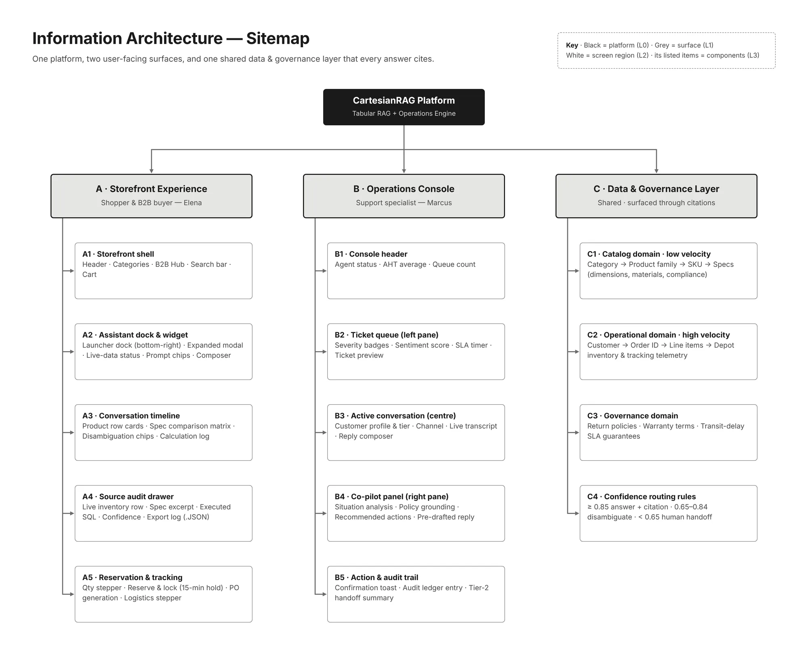
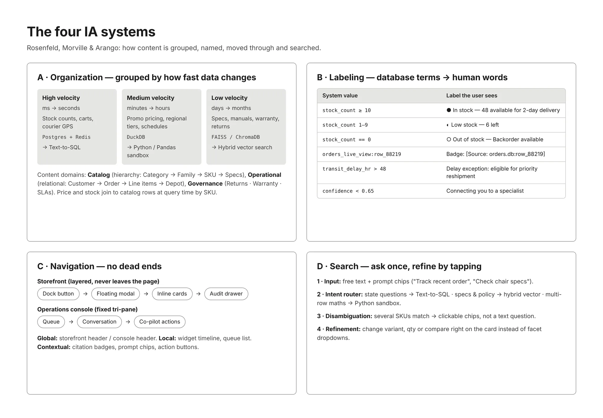
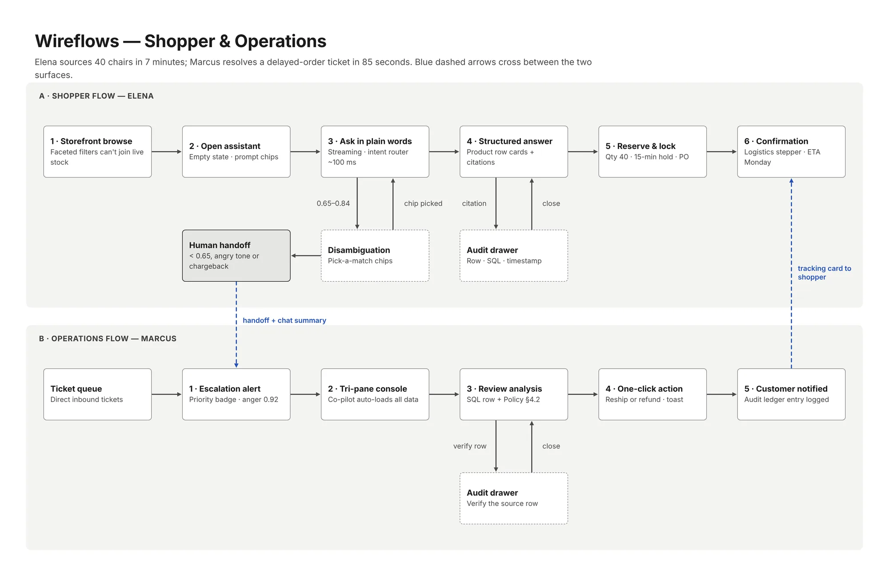
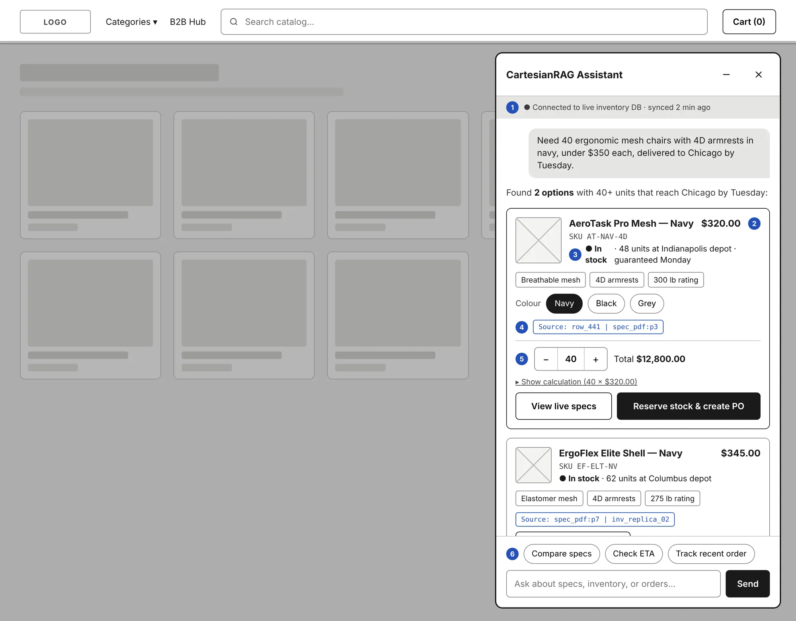
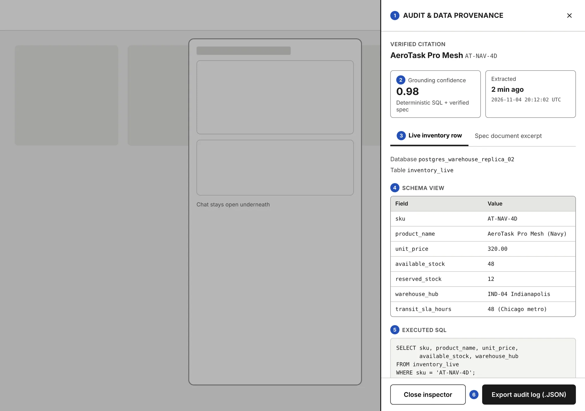
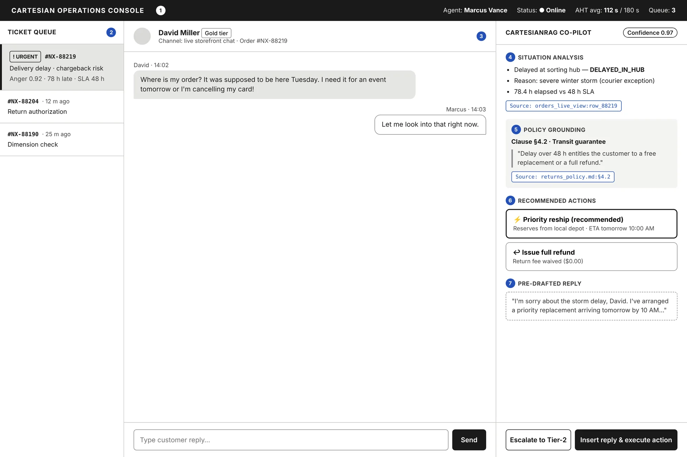
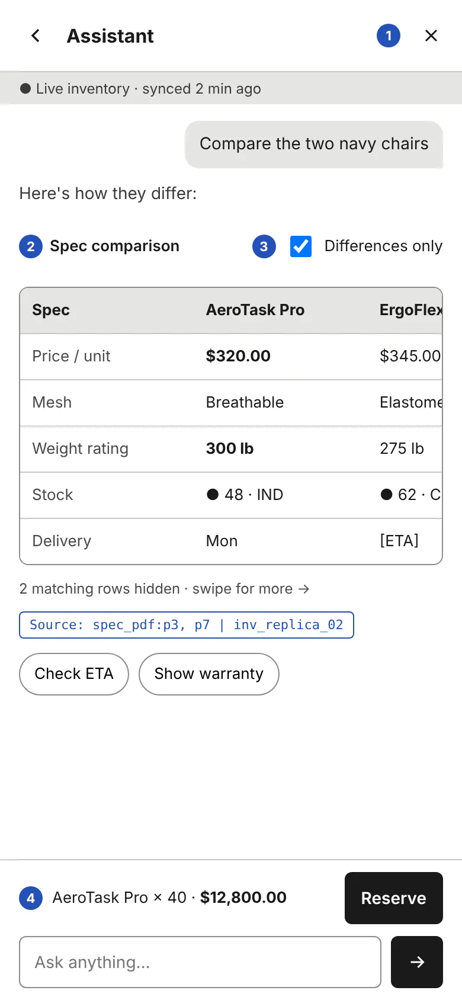
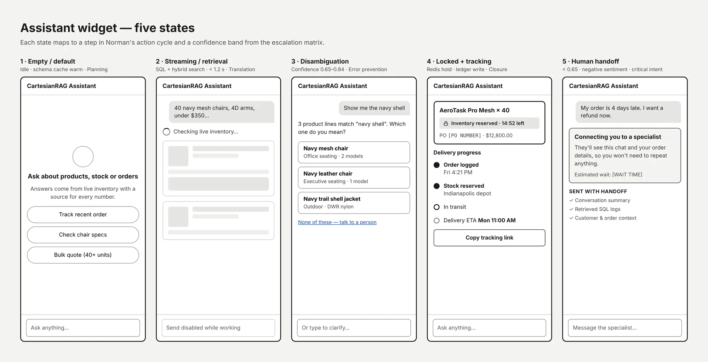

Information Architecture.
CartesianRAG bridges loose natural‑language questions and strict, many‑column tables. The IA decides how answers are organised, labelled and reached before any screen is drawn.
One platform, two surfaces, one source of truth.
Think of a school building. The platform is the building. People walk into two classrooms: the Storefront for shoppers and the Operations Console for agents. Behind both sits the library, the data and governance layer, which every answer must cite.

Organised by how fast the data changes.
Organization
Catalog (slow), operations (fast) and governance (policies).
Labeling
Database words become shopper words: low_stock becomes “Low stock · 6 left”.
Navigation
Assistant dock → widget → inline cards → receipt drawer. The console uses three panes.
Search
Natural language in; “Did you mean…?” chips when a question matches several products.

Two journeys that hand off to each other.

Greyscale on purpose, so feedback stays on structure and words.




